Change Tax rates
|
|
This topic is listed to illustrate the process for changes in Tax percentages. Some of the screens, themes and periods are not in line with the rest of the documentation. |

Change Tax rates
The Tax authorities may impose changes in the VAT (GST/Sales tax) rates. For example, in South Africa, the South African Revenue Services (SARS), changed the VAT rate from 14% to 15% on 1 April 2018.
References / Resources
SARS - FAQs: Increase in the VAT rate from 1 April 2018.
SARS – Pocket Guide on the VAT rate increase on 1 April 2018. The following is a list of topics explained in detail:
- RATE CHANGE
- TRANSACTION DATE
- PRICES QUOTED OR ADVERTISED
- AGREEMENTS
- SALES AND BILLING SYSTEMS, ISSUING OF CASH REGISTER SLIPS, TAX INVOICES, DEBIT AND CREDIT NOTES
- RECEIPT OF QUOTES, TAX INVOICES, CASH REGISTER SLIPS DEBIT OR CREDIT NOTES
- IMPORTATION OF GOODS
- ACCOUNTING SYSTEMS
- VAT201 RETURNS
- RATE SPECIFIC RULES
SARS – VAT201 – Return Example.
GOLEGAL - VAT rate increase: What you need to consider.
Moneyweb - VAT increase: Practical issues for companies to consider.
In osFinancials, the VAT accounts need to accommodate two VAT rates.
An invoice may even reflect a rate of 14% and 15% depending if the goods were supplied or services rendered before 31 March 2018 or after 1 April 2018. An example would be where a service provider charges subscriptions in advance April 2018, but usage (e.g. calls) are charged in arrears March 2018.
Configure TurboCASH5 / osFinancials
Tax Accounts
In this example, the VAT rate is based on 14% in March 2018 and increased to 15% in 1 April 2018.
For the transition period and thereafter; it is recommended that a total new structure of Tax accounts (including the 2 Tax ledger accounts (i.e. VAT – Control and VAT – Payment accounts), similar to the14% structure is replicated.
An example of the 14% Tax accounts and the 15% Tax accounts.
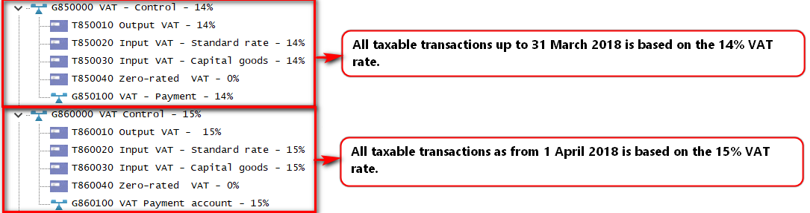
This method makes it easier for reporting, managing and processing tax transactions.
|
|
Another method is where Tax accounts are added within the existing VAT structure. An example to incorporate the Tax (VAT) accounts into the existing structure of the Chart of accounts:
|


Change the Descriptions of existing Tax Accounts to 14%
Add or Change the Descriptions of the Tax Accounts (i.e. Output - VAT Control, the VAT Payment account, as well as all Tax accounts to 14%) to reflect the existing percentage applicable (until 31 March 2018).
To change the Descriptions of Output and Input tax accounts to 14%:
- On the Setup ribbon, select Setup → Accounts.
- Select a Tax account.
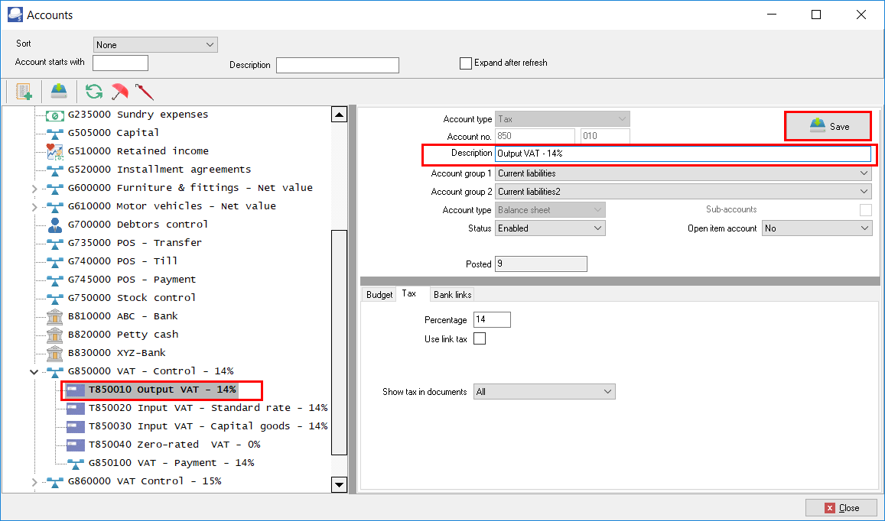
- In the “Description” field, add “- 14%” to “Output VAT - 14%”.
- Click the Save button to save the changes. After all the account descriptions is changed, the 14% accounts should display as follows:

Add new VAT - Control and VAT - Payments - 15% accounts
This is only applicable if a new Structure is set for the Tax accounts (i.e. VAT - Control, the VAT - Payment account (as Ledger accounts), as well as all Tax accounts to 15%) to reflect the 15% percentage applicable (as from 1 April 2018).
Add new VAT - Control account at 15% as a Ledger Main account
The VAT – Control – 15% account is the Main account under which the VAT – Payment – 15% as a Ledger account type as well as Tax account type for each Tax codes (VAT codes) at 15% as well as the Zero-rated Tax codes (VAT codes) will be processed, managed and reported on. Transactions on which the 15% VAT rate is applicable from 1 April 2018, are selected and posted (updated to the ledger).
To Add a new VAT Control as a Ledger Main account for 15%:
- On the Setup ribbon, select Setup → Accounts.
- Select the “REPORTING GROUP ROOT” and click on the 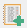 (Add:Account) icon (or select the Add on the Context menu). An entry for the new ledger account is displayed as “G000 000 Account name” on the Account list.
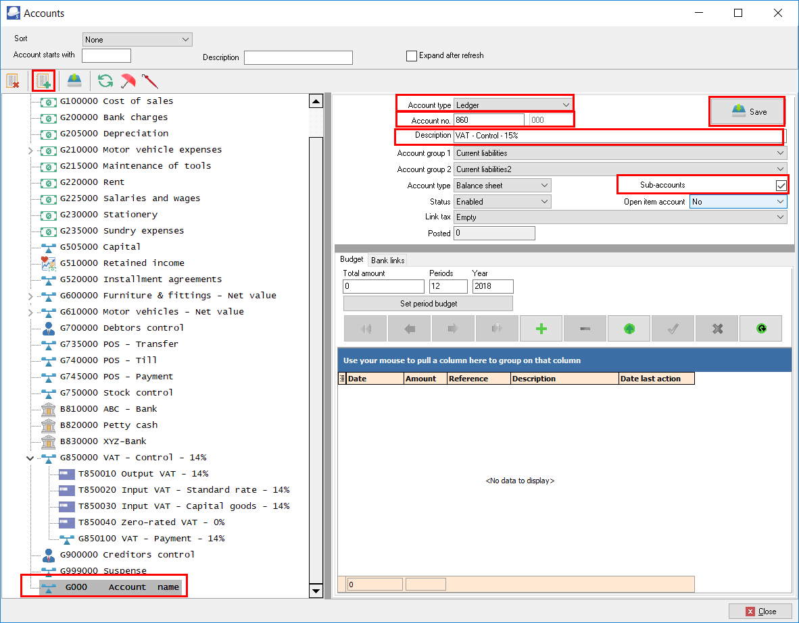
- Enter or select the following:
- Account type - Select “Ledger”.
- Account no. - Change “100” in the sub accounts field of the “Account no.” field to “860”.
- Description - Replace “Account name” with “VAT Control – 15%”.
- Account group 1 - If you have set up “Account group 1”, select your account group e.g. “Current liabilities”.
- Account group 2 - If you have set up “Account group 2”, select your account group e.g. “Current liabilities2”.
- Type - “Balance sheet” should be displayed.
- Sub accounts - Select (tick) this option. This is the new main account under which a Ledger sub account for the Tax payments and Tax accounts for each of VAT accounts will be added for the 15%.
- Status -“Enabled” (default) should be selected.
- Open item account - “No” (default) should be selected.
- Link tax - “Empty” (default) should be selected.
- Click on the Save button. When you save the “VAT - Control - 15%” account, if will automatically be listed after the 14% Tax accounts.
Add new VAT Payment account at 15% as a Ledger Sub account
The VAT – Payment – 15% as a Ledger account type on which the payment to SARS is recorded. All payments to SARS for transactions, on which the 15% VAT rate is applicable from 1 April 2018, should be paid and recorded in the from this VAT – Payment – 15% account.
All payments to SARS for transactions, on which the 14% VAT rate is applicable on or before 31 March 2018, should be paid and recorded in the VAT – Payment – 14% account.
To Add a new VAT Payment - Ledger Sub account for 15%:
- On the Setup ribbon, select Setup → Accounts.
- Select the “G860000” VAT Control – 15%” account and click on the (Add:Account) icon (or select the Add on the Context menu). An entry for the new ledger account is displayed as “G860 000 Account name” on the Account list.
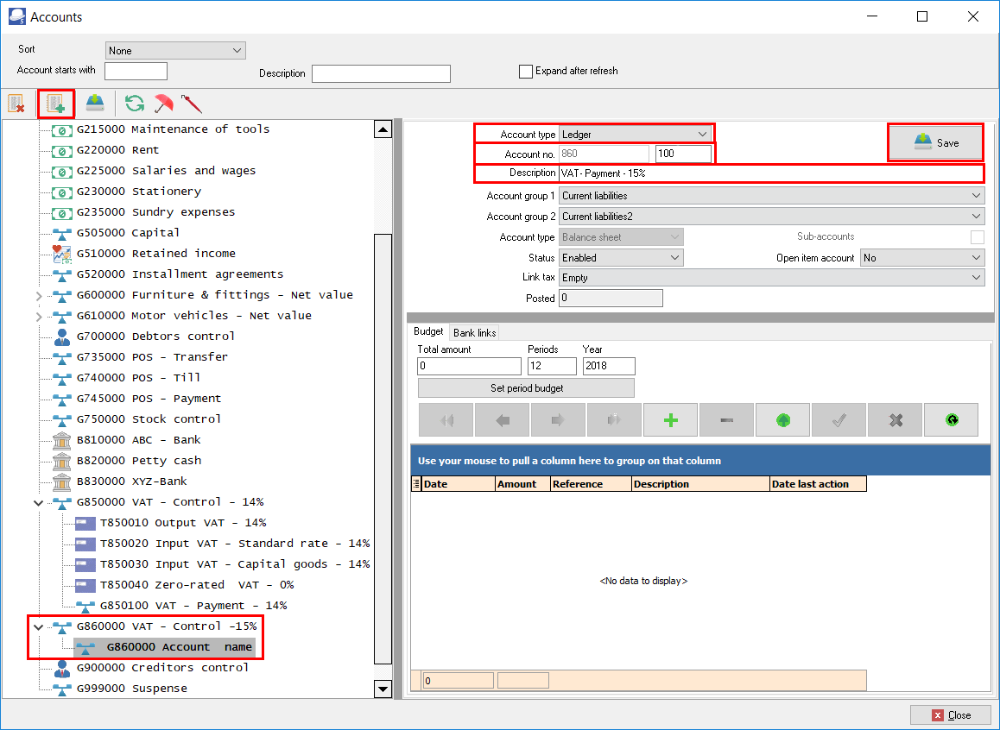
- Enter or select the following:
- Account type - Select “Ledger”.
- Account no. - The main account “860” in the of the “Account no.” field cannot be changed. Change the “Sub accounts” field from “000” to “100”.
- Description - Replace “Account name” with “VAT - Payment – 15%”.
- Account group 1 - If you have set up “Account group 1”, select your account group, e.g. “Current liabilities”.
- Account group 2 - If you have set up “Account group 2”, select your account group, e.g. “Current liabilities2”.
- Type - “Balance sheet” should be displayed.
- Sub accounts - This option cannot be selected, since this is a sub account of the VAT - Control - 15% main account.
- Status -“Enabled” (default) should be selected.
- Open item account - “No” (default) should be selected.
- Link tax - “Empty” (default) should be selected.
- Click on the Save button.
Add new Tax codes (Tax accounts) for Each Tax type at 15%.
Your Set of Books in TurboCASH need to be configured to is able to accommodate the different rates. Transactions need to be processed at the new VAT rate of 15% as from 1 April 2018, and at VAT rate of 14% as up to 31 March 2018.
All “Enabled” Tax / VAT codes are listed in the Tax lookup in the “Tax” column. Transactions are taxable at the VAT rate of 14% up to 31 March 2018, and transactions as from 1 April 2018 are taxable at the VAT rate of 15%.
To Add a VAT accounts – Tax Sub account for 15%:
- On the Setup ribbon, select Setup → Accounts.
- Select the Tax Control Account (as in this case, “G860-000 VAT Control Account”) and click on the (Add:Account) icon (or select the Add option on the Context menu).
- An entry for the new ledger account is displayed as “G860 000 Account name” on the Account list. The reason for this is that we need to create a Tax code, which is a Sub-account for the Tax main account (i.e. “VAT Control – 15% account”).
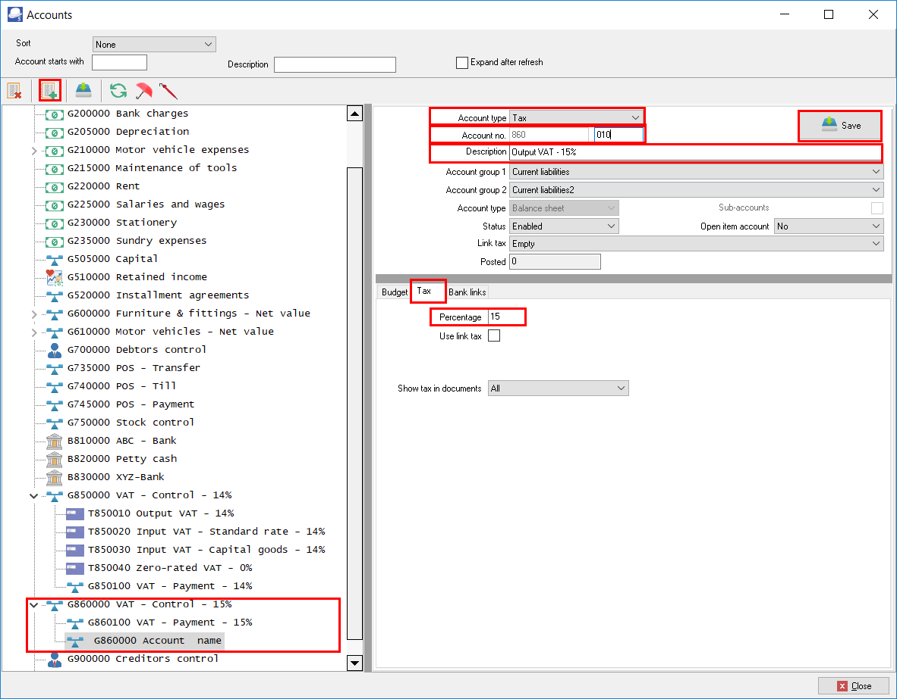
- Enter or select the following:
- Account type - Select “Tax (VAT/GST/Sales tax)”.
- Account no. - The Main account “860” is displayed and the sub accounts number field enter “010”.
- Description - Replace “Account name” with “Output VAT – 15%”.
- Account group 1 - If you have set up “Account group 1”, select your account group, e.g. “Current liabilities”. This is the Account group which is linked to the main account.
- Account group 2 - If you have set up “Account group 2”, select your account group, e.g. “Current liabilities2”. This is the Account group which is linked to the main account.
- Type - “Balance sheet” should be displayed. This field cannot be selected, since the main account is a Balance sheet type account.
- Sub-accounts - This field cannot be selected, since this is a sub-account.
- Status - “Enabled” (default) should be selected.
- Open item account - “No” (default) should be selected.
- Link tax - “Empty” (default) should be selected.
- Click on the Tax tab.
- Percentage - Enter the percentage as “15”.
- Use link tax - Do not select this option.
- Show tax in documents – Leave the option as “All” for the purpose of this tutorial.
- Click on the Save button.
Add new Tax type accounts at 15% similar to the 14% tax type accounts, including the Zero-rated tax type accounts
An example of the Tax accounts - 14% as well as the Tax accounts - 15%, in the Chart of accounts, is as follows:
Stock items
Each Stock item is linked to up to 5 accounts, i.e. the Input tax, Output tax, Sales, Cost of sales and Stock control accounts. The Output and Input Tax at the 15% Vat rate needs to be linked to each Stock item.
Tax classes in Stock - create a new Tax class
To save time to select up to 5 accounts, for each stock type, use Tax classes in Stock to link the Input tax, Output tax, Sales, Cost of sales and Stock control accounts.
To create a new Tax class:
- On the Setup ribbon, select Stock information.
- Click on the Tax classes tab.
|
|
If “English” as the default language is used, Tax classes will be displayed. If you have selected, “en-South-Africa” the Tax classes description, will reflect VAT classes. |
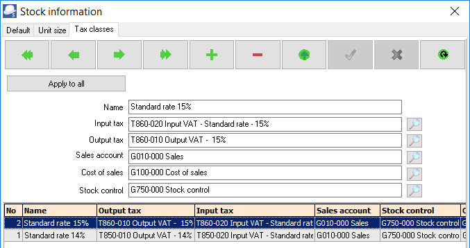
- Select the existing Tax class and add 14% to the Name field, if not displayed as 14%.
- Click 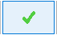 to save the changes.
- Click 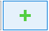 to add a new Tax class.
- Enter the Name (description) e.g. “Standard rate 15%” for the tax class.
- Select the following accounts:
- Input Tax - Select the Input tax account, i.e. Input VAT – Standard rate – 15% (860-020).
- Output Tax - Select the Output tax account, i.e. Output VAT – 15% (860-010).
- Sales account - Select the Sales account (010-000).
- Cost of sales - Select the Cost of sales account (100-000).
- Stock control - Select the Stock control account (750-000).
- Click to save the changes.
- Click on the OK button to close the “Stock information” screen.
Print a list of the Tax classes
When a stock item is linked to a tax class, it will disable the Lookup button on the Ledger tab of the Stock items screen (Default ribbon) for a selected stock item. It will automatically set the Input tax and Output tax, Sales, Cost of sales and Stock control account fields without having to select them for each stock item.
To print Stock item listing - Tax classes reports:
- On the Reports ribbon, select Reports → Stock → Stock item listing.
- Select "Tax classes" report.
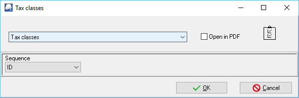
- Select the Sequence (i.e. ID (record Id) or description) for the sequence to list the tax classes.
- Click on the OK button.
An example of the Stock item listing - “Tax class - Listing” report, is as follows:
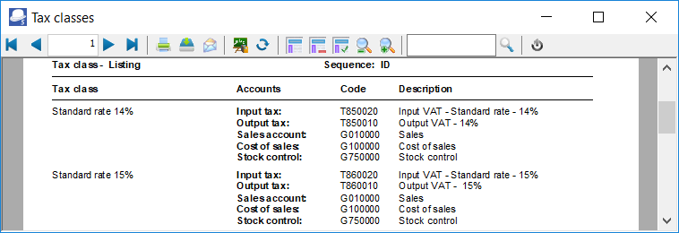
The next step is to link the accounts to the stock items.
Link Tax classes to Stock items
To change Input and Output tax accounts from 14% to 15%:
- On the Default ribbon, select Stock items.
- Select a Stock item.
- Click on the Ledger tab.

- Tax class, select “Standard rate 15%”.
- Click on the Save button. The inclusive amount will automatically be updated with the new tax rate.
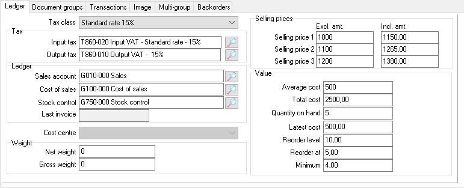
- Repeat the process for all the stock items.
|
|
You may also change the tax classes on the grid view. In this example, the Tax class column was dragged from the Right to the Left. 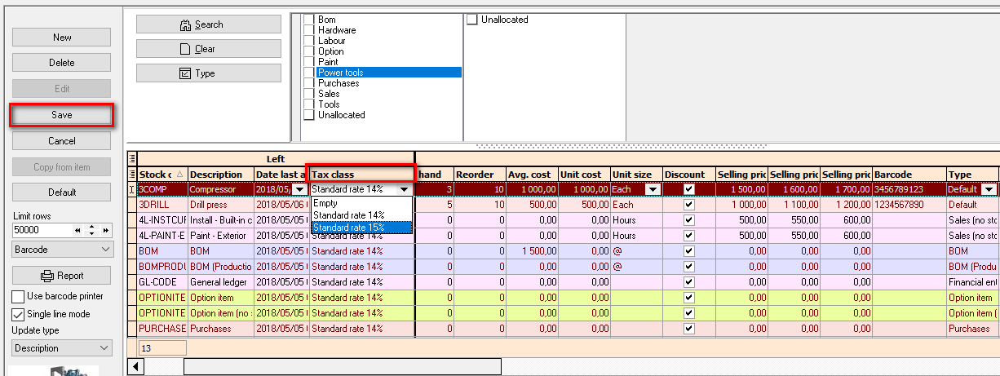 Select the Stock item and Tax class Standard rate 15% and click on the Save button. Repeat the process for all the stock items. |

Disable / Block posting transactions at the 14% VAT rate
Once all the 14% taxable transactions is processed and finalised, you may:
- Disable the tax accounts to prevent any transactions being posted (updated) to the ledger, to the 14% tax accounts, or available for selection on lookup screens and lists, while entering transactions in Batches and Documents, and/or;
- Block the Period March 2018 in which the 14% tax rate is applicable. This will not allow you to post (update) any transactions to the ledger at at the 14% Tax rate.
- Disable Tax accounts at 14%
If the "Status" field of a ledger account is set to "Disabled" for a ledger account (Setup ribbon, select Setup → Accounts), it will not allow you to post (update) the batch or document to the ledger.
|
|
Before you disable old tax accounts at 14%, make absolutely sure that the taxable transactions at 14%, is correct and posted (updated) to the ledger. All purchase documents (i.e. Purchases and Supplier returns), as well as sales documents (i.e. Invoices and Credit notes) is correct and posted (updated) to the ledger at the Tax rate of 14%. |
To disable Input and Output tax accounts from 14%:
- On the Setup ribbon, select Setup → Accounts.
- Select a Tax account.
- In the “Status” field, select “Disabled”.
- Click the Save button to save the changes.
Print or view Disabled accounts
On the Reports ribbon, select Reports → Ledger → Chart of accounts. The Disabled accounts is displayed as "Yes" in the "Disabled" column.
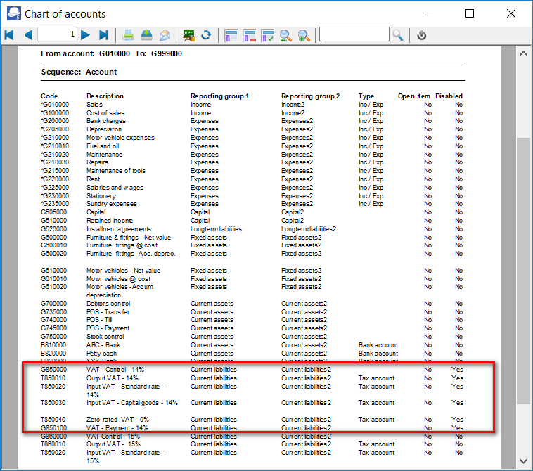
Disabled Tax accounts will not be listed on the Tax account lookup in Batches
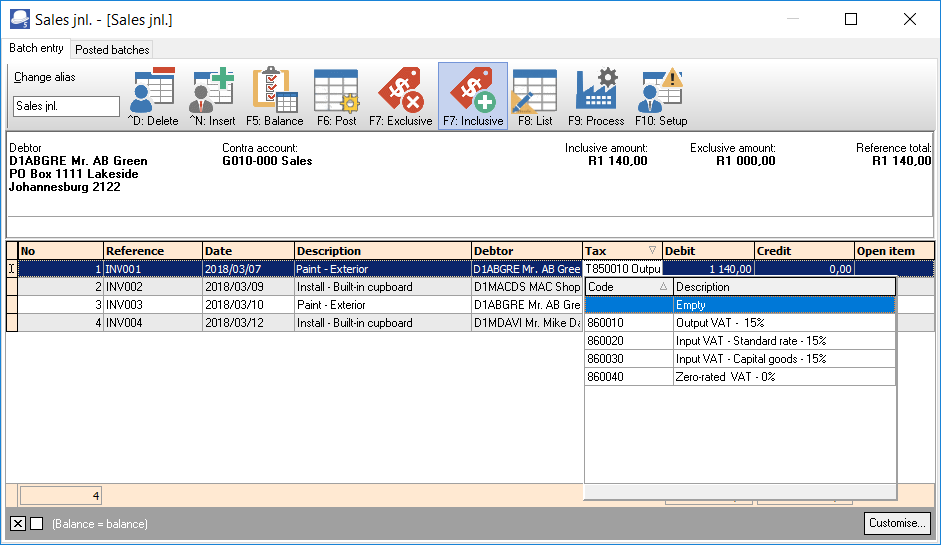
Disabled Tax accounts will not be listed on the Tax account lookup in Documents
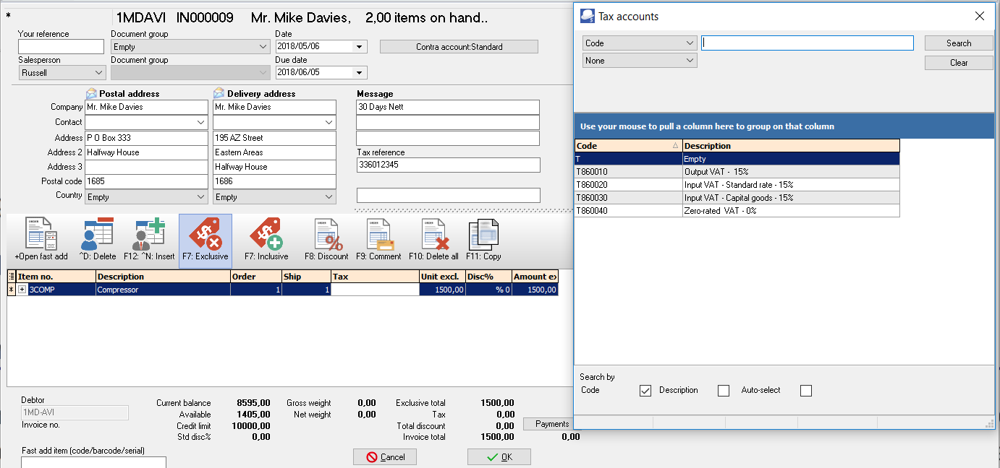
Disable posting to period March 2018
Block the Period March 2018 in which the 14% tax rate is applicable. This will not allow you to post (update) any transactions to the ledger at at the 14% Tax rate.
|
|
All purchase documents (i.e. Purchases and Supplier returns), as well as sales documents (i.e. Invoices and Credit notes) is correct and posted (updated) to the ledger at the Tax rate of 14%. |
Disable posting to period March 2018:
- On the Setup ribbon, select Reporting dates.
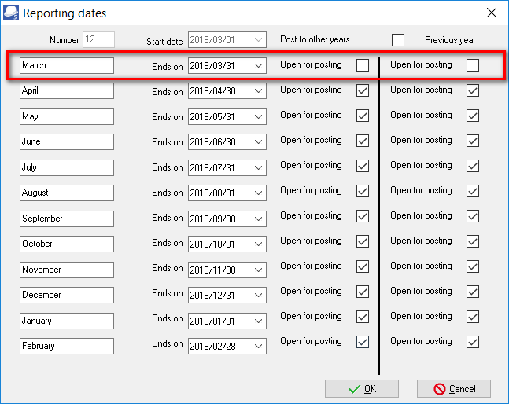
- Select “March 2018” period “Ends on” and remove the tick in the “Open for Posting” fields.
- Click on the OK button to save the changes.
Processing Transactions
During the transition period, you may need to use both the tax rates, i.e. 14% or 15%, depending on whether the transaction(s) is taxable on or before 31 March 2018 at 14%; or from 1 April 2018 at 15%.
In TurboCASH, the VAT accounts need to accommodate two VAT rates. An invoice may even reflect a rate of 14% and 15% depending if the goods were supplied or services rendered on or before 31 March 2018 or from 1 April 2018.
An example would be where a service provider charges subscriptions in advance April 2018 at 15%, but usage (e.g. calls) are charged in arrears March 2018 at 14%.
Processing transactions in Batches
When processing transactions in Batch entry on the Default tab, you need to make absolutely sure that the correct Tax / VAT code is selected.
By default, all accounts is “Enabled”. All Tax / VAT codes are listed in the Tax lookup in the “Tax” column. Once the transitional period where all the transactions up to 31 March 2018 at 14% is posted (updated) to the ledger, you may disable the 14% Tax / VAT accounts (Setup ribbon, Setup → Accounts). The 14% rate Tax / VAT accounts will not be listed on the Tax lookup screens.
|
|
If you have a Zero-rated VAT – 0% Tax account, in the 14% structure (e.g. “850040 Zero-rated VAT – 0%”), you also need to disable Zero-rated VAT – 0% Tax account. |
The 14% VAT rate (e.g. “850000” account range) are normally applicable to transactions up to 31 March 2018, in the “Date” column.
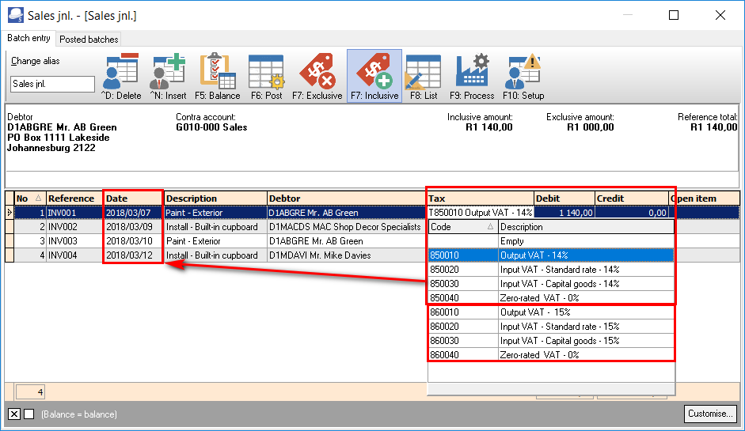
The 15% VAT rate (e.g. “860000” account range) is normally applicable to transactions as from 1 April 2018, in the “Date” column.
Processing transactions in Documents
When processing transactions in Documents on the Default tab in purchase documents (i.e. Purchases and Supplier returns), as well as sales documents (i.e. Invoices and Credit notes), you need to make absolutely sure that the correct Tax / VAT code is selected.
By default, all accounts is “Enabled”. All Tax / VAT codes are listed in the Tax lookup in the “Tax” column. Once the transitional period where all the transactions up to 31 March 2018 at 14% is posted (updated) to the ledger, you may disable the 14% Tax / VAT accounts (Setup ribbon, Setup → Accounts). The 14% rate Tax / VAT accounts will not be listed on the Tax lookup screens.
|
|
If you have a Zero-rated VAT – 0% Tax account, in the 14% structure (e.g. “850040 Zero-rated VAT – 0%”), you also need to disable Zero-rated VAT – 0% Tax account. |
The 14% VAT rate (e.g. “850000” account range) are normally applicable to transactions up to 31 March 2018, in the “Date” column.
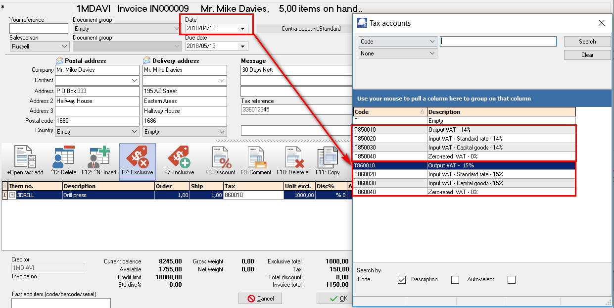
The 15% VAT rate (e.g. “860000” account range) is normally applicable to transactions as from 1 April 2018, in the “Date” column.
Tax reports
|
|
Before you print tax reports to submit your Tax (VAT/GST/Sales tax) returns, you need to post (update) all batch transactions and documents (i.e. invoices, credit notes, purchase and supplier return documents) for the tax period. |
The following tax reports are available:
- Tax per period report – This report is used to complete the Tax (VAT/GST/Sales tax) returns. It will list a summary of the Output tax less the Input tax and the total tax payable / refundable.
- Tax report - Reference / Document no. - This report will list the details of accounts and transactions of all posted (updated) batch and document transactions, on which Tax (VAT/GST/Sales tax is applicable. It will display the Tax code and description as well as the contra accounts for each transaction.
- Tax list debtor with tax id - This report will list a total exclusive of tax, tax amount and inclusive amount of tax) for the Invoices less Credit notes for debtor (customer / client) accounts for selected period(s) or date(s). It will also display the Company and Tax registration numbers for each for debtor (customer / client) accounts.
- Tax list creditor with tax id - This report will list a total exclusive of tax, tax amount and inclusive amount of tax) for the Purchase documents less Supplier returns for creditor (supplier / vendor) accounts for selected period(s) or date(s). It will also display the Company and Tax registration numbers for each for creditor (supplier / vendor) accounts.
|
|
The Tax excluded and Tax amount in the Report total of the Tax report - Reference / Document no. report, should balance with the Total - Output tax – Input tax of the Tax per period report, if the same periods are selected. |
|
|
It is recommended that these tax reports are printed and archived (PDF) for record and audit purposes. |
Tax per period report
This report is used to complete the Tax (VAT/GST/Sales tax) returns. It will list a summary of the Output tax less the Input tax and the total tax payable / refundable.
An option is available to list all transactions and documents including the account code, account description, country and tax reference of the debtor (customer / client) or creditor (supplier / vendor) account (if applicable).
To print tax per period reports:
- On the Reports ribbon, select Reports → Tax.
- Select the Tax per period report. The “Tax list debtor with tax id” report is the default report.
- Select the “Tax per period” report.
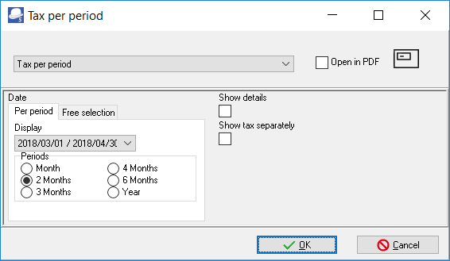
- Select the following:
- Per period - Tick on “2 Months” and select “2018/03/01 / 2018/04/30”.
- Show details - Leave blank. By default, this option is not selected. It will only list the totals exclusive of Tax (VAT/GST/Sales Tax) for each tax code.
If this option is selected, it will list all transactions and documents including the account code, account description, country and tax reference of the debtor or creditor account (if applicable).
- Show tax separately - Leave blank. By default, this option is not selected. If this option is selected, each tax code will print on a new page. It is recommended, that this option should only be selected, when the “Show details” option is selected.
- Click on the OK button.
An example of the “Tax per period” (no details) report, is as follows:
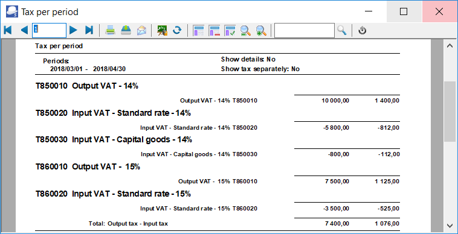
|
|
It is recommended that the details should also be printed and saved for record purposes. |
|
|
It is important to print the details to check the details of your transactions. |
The detailed tax report (“Show details” and “Show tax separately” options selected) for the same period, is as follows:
Page 1 – Output tax - 14%
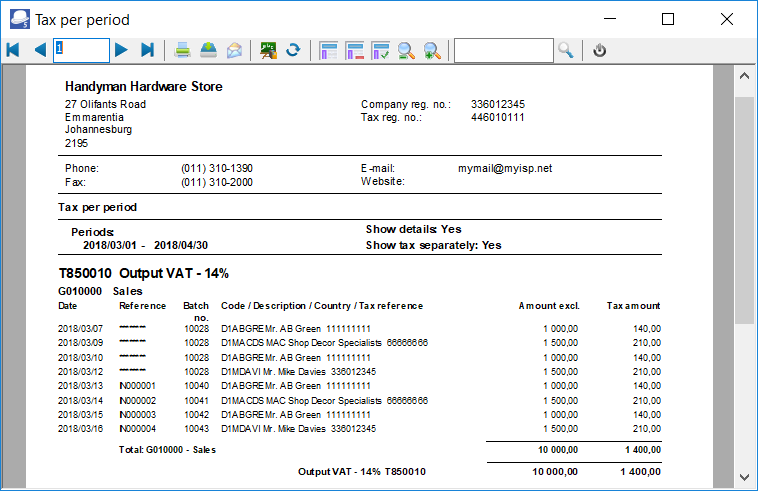
Page 2 – Input tax – Standard rate -14%

Page 3 – Input tax – Capital goods - 14%
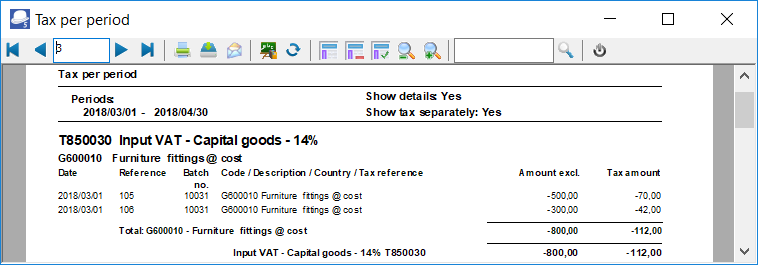
Page 4 – Output tax – 15%
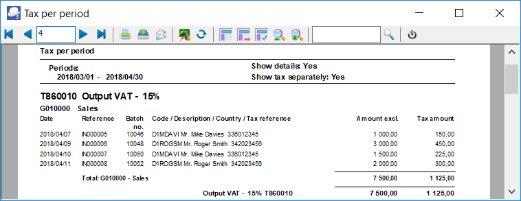
Page 5 – Input tax – Standard rate -15%
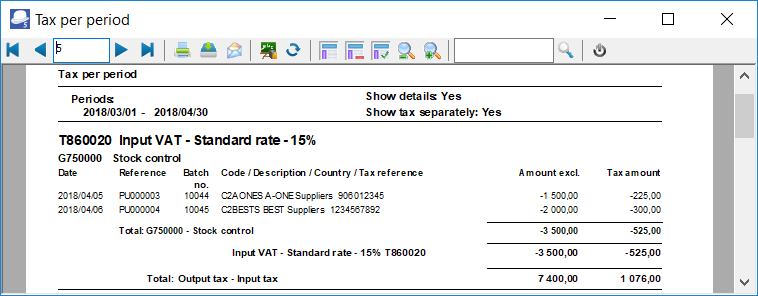
|
|
The Tax excluded and Tax amount in the Report total of the Tax report - Reference / Document no. report, should balance with the Total - Output tax – Input tax of the Tax per period report, if the same periods are selected. |
Tax report - Reference / Document no.
This report will list the details of accounts and transactions of all posted (updated) batch and document transactions, on which Tax (VAT/GST/Sales tax is applicable. It will display the Tax code and description as well as the contra accounts for each transaction. If the same periods is selected as on the Tax per period report, the Exclusive and Tax amount totals should balance.
To print tax reference /document no. reports:
- On the Reports ribbon, select Reports → Tax.
- Select the Tax per period report. The “Tax list debtor with tax id” report is the default report.
- Select the “Tax report – Reference / Document no.” report.
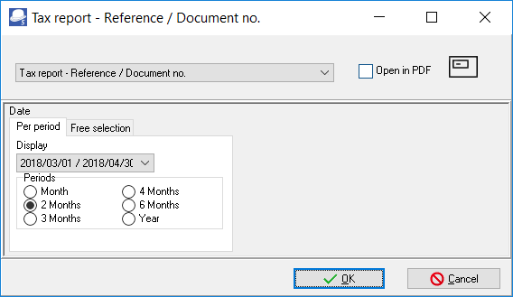
- Select the following on “2 Months” and select “2018/03/01 / 2018/04/30”.
- Click on the OK button.
An example of the “Tax report – Reference / Document no.” report, is as follows:
Page 1 -
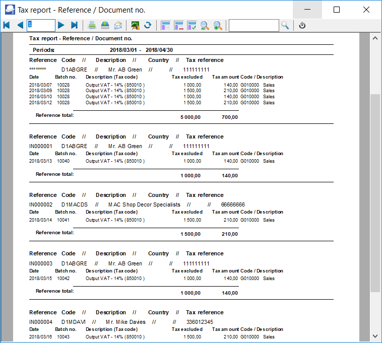
Page 5 – (Last page) Totals
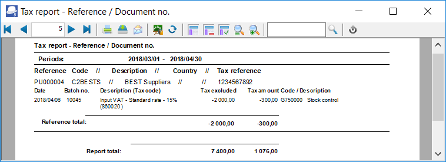
|
|
Once again, the Tax excluded and Tax amount in the Report total of the Tax report - Reference / Document no. report, should balance with the Total - Output tax – Input tax of the Tax per period report, if the same periods are selected. |